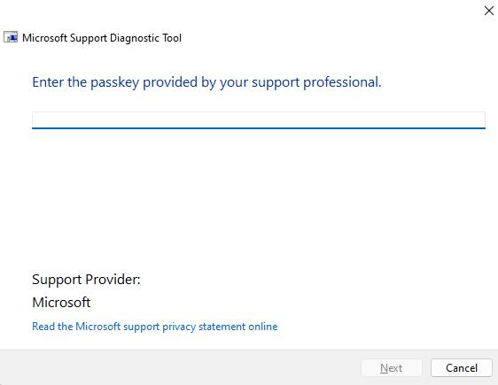
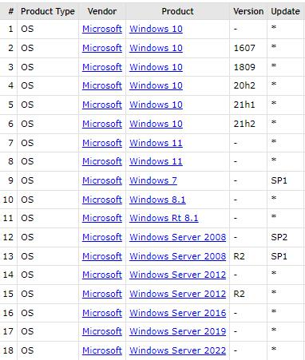
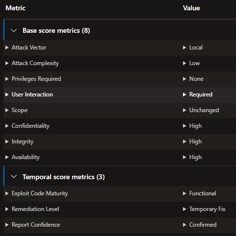
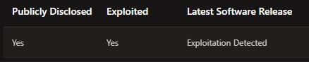

Trust no one. Microsoft Windows exploited!
Microsoft has confirmed the "Remote Code Execution" vulnerability that has been exploited in the "Microsoft Windows Support Diagnostic Tool (MSDT)" service since at least April…
Are we really safe?
In this article, I will address the MSDT vulnerability of Windows.
The vulnerability, identified by MITRE as CVE-2022-30190 (Follina Zero-Day, CVSS:9.3), allows misuse of the Windows Support Diagnostic Tool through Microsoft Office documentation on Windows platforms. Worse still, it is actively used by cybercriminals because there is still no solution for this vulnerability, but it is estimated that the necessary patches are prepared for the new update.
 Figure 2. Microsoft Support Diagnostic Tool (MSDT)Cyberspace is getting more and more terrifying in a world that evolves and becomes more digital as it evolves. Financial assets, reputations, personal data and more lost due to a bug in a small code snippet…
Recognized as a battleground by NATO at the 2016 Warsaw summit, cyberspace is as dangerous and terrifying as any other battlefield, and even the systems we trust can be attacked.
Microsoft company, one of the giants of the digital world, has confirmed the security vulnerability on Windows platforms, which has been exploited since at least April. Well what does it mean?
After Microsoft's statement, it becomes clear that all systems using Windows OS (Table 1.) have been in grave danger since at least April, and systems that do not use the "workarounds" suggested by Microsoft are potential targets of attackers who take advantage of this vulnerability.
Here are the Windows products affected by this vulnerability:
Table 1. Windows versions affected by Follina (CVE-2022-30190) vulnerability 
If you are wondering what Remote Code Execution is, here is the definition of this vulnerability:
Remote Code Execution: A vulnerability that allows an attacker to access the target's system via malicious software and execute various commands on the system.
Summary of the vulnerability:
It's worth noting that the attack happened locally and requires user input for execution, so as Fortinet analysis points out, the "remote" aspect refers to the attacker's location. Follina allows RCE in environments by exploiting a vulnerability specific to Windows operating systems in the Microsoft Support Diagnostic Tool (MSDT) provided by malicious Microsoft Office documents that loads HTML files from a remote location and executes malicious PowerShell commands.
The observed malicious document can abuse Microsoft Word's remote template feature and pull the HTML file containing embedded JavaScript code that uses the ms-msdt scheme to execute a PowerShell “Invoke-Expression” command. The command kills the Microsoft Support Diagnostic Tool (msdt.exe) process and runs the malicious rgb.exe executable after running the files that are eventually contained in a .RAR file.
The researchers noted that the file is still executable in Microsoft Word with macros disabled and could potentially be abused by using a .RTF file instead of the observed .DOC file to bypass protected view or "preview".
How do attackers exploit this vulnerability?
The Microsoft Support Diagnostic Tool (Figure 2.) that caused the vulnerability is actually used to send diagnostic information to Microsoft when something goes wrong with Windows. This tool is called via MSDT URL protocol from other applications.
In the statement made by the researchers who discovered the vulnerability, it was stated that the attackers, using social engineering and phishing methods, sent an e-mail containing a malicious file to the user and convinced the user to open this e-mail with an interesting title.
Figure 3. Malicious FileIf the vulnerability is successfully exploited, the attacker gains control of the system with the user rights of the application calling MSDT. If the user has administrator rights, this vulnerability gives full authority over the entire system, allowing the attacker to create very large threats.
Other information Microsoft has published about this vulnerability via MSRC is as follows:
 Figure 4. MSRC vulnerability metric
Executive Summary (MSRC):
“A remote code execution vulnerability exists when MSDT is called using the URL protocol from a calling application such as Word. An attacker who successfully exploits this vulnerability can run arbitrary code with the privileges of the calling application. The attacker can then install programs, view, change, or delete data, or create new accounts in the context allowed by the user’s rights.”
Exploitability (MSRC):
 Figure 5. Exploitability of vulnerability (MSRC)
So which attack groups/campaigns feed off this vulnerability?
There isn't a big wave of attacks on this vulnerability, but there are attacks against EU/US and other targets. On the other hand, Proofpoint company reported that they intervened in a phishing campaign attacking customers in EU and US government institutions. State actors are suspected to be behind the action.
An attack was also observed in the South Pacific originating from servers in Palau. In the process, this vulnerability was exploited to sign a company-owned digital certificate. CERT-UA also warns of attacks on government targets in Ukraine.
Additionally, this vulnerability has been confirmed to have been exploited by threat groups such as TA413 linked to the Chinese government, as well as the first attacks targeting the Philippines, Nepal and India earlier in the year (2022).
How can we be protected?
It is known that Microsoft has not released a security patch for this vulnerability, but preparations have been made in this direction. That's why Microsoft published the recommended solutions to reduce the threat. These workarounds include turning off the MSDT URL protocol, preventing office documents from communicating with MSDT.
Here are those suggestions:
Workarounds
To disable the MSDT URL Protocol
Disabling MSDT URL protocol prevents troubleshooters being launched as links including links throughout the operating system. Troubleshooters can still be accessed using the Get Help application and in system settings as other or additional troubleshooters. Follow these steps to disable:
- Run Command Prompt as Administrator.
- To back up the registry key, execute the command “reg export HKEY_CLASSES_ROOT\ms-msdt filename“
- Execute the command “reg delete HKEY_CLASSES_ROOT\ms-msdt /f”.
How to undo the workaround
- Run Command Prompt as Administrator.
- To restore the registry key, execute the command “reg import filename”
Finally, since there is still no security patch for this vulnerability, systems using the windows versions listed in Table 1. should protect themselves by following Microsoft's recommended threat mitigation guidelines until the security patch is released.